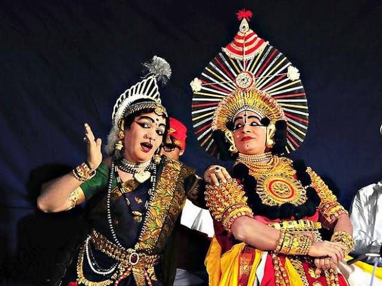

Exploring India's Culture and Heritage
Classical Dance Forms of India
Yakshagana is a traditional theatre form that combines dance, music, dialogue, costume, makeup, and stage techniques with a unique style and form. It originated in the coastal districts of Karnataka, especially in Udupi and Dakshina Kannada, and is performed in Kannada. Yakshagana typically enacts stories from Indian epics like the Mahabharata and Ramayana. The performance is marked by vibrant costumes, elaborate headgear, and face paint, accompanied by a live orchestra featuring traditional instruments such as the chenda, maddale, and harmonium. Shows are usually held at night and continue for several hours, often until dawn. This art form serves not only as entertainment but also as a medium of storytelling and cultural expression, deeply rooted in the region’s traditions and religious practices.
Initially, Yakshagana was performed in temple courtyards during annual festivals, deeply intertwined with devotional practices. Over time, it moved out of temples into open-air theatres called “Bayalata”, making it more accessible to the public. Unlike classical dance forms that followed strict rules of the Natya Shastra, Yakshagana evolved as a more flexible, folk-theatre tradition. It absorbed local legends, dialects, and storytelling techniques, which gave rise to different regional styles, such as the Thenku Thittu (southern style) and Badagu Thittu (northern style).
The history of Yakshagana dates back to several centuries, with its roots believed to have emerged between the 10th and 16th centuries in the coastal regions of Karnataka. It evolved as a form of temple art, closely associated with religious rituals and the Bhakti movement, which emphasized devotion through music and performance. Initially performed in temple courtyards, Yakshagana gradually developed into a more elaborate theatrical form with stylized dance, dramatic storytelling, and rich musical accompaniment. Over time, it incorporated influences from local folk traditions and classical Sanskrit theatre. Manuscripts dating back to the 15th century mention Yakshagana performances, and the form flourished under royal patronage and community support. Today, it remains a vibrant tradition, passed down through generations, preserving the mythological narratives and cultural heritage of Karnataka.
Yakshagana has developed into two main styles: Thenku Thittu (Southern style) and Badagu Thittu (Northern style). While both share core elements, they differ in music, dance movements, costumes, and presentation techniques. Thenku Thittu is more rhythmic and fast-paced, while Badagu Thittu features elaborate headgear and more dramatic dialogue delivery.
Yakshagana is more than just entertainment; it is a medium of preserving and passing down mythology, ethical values, and local traditions. It serves as a cultural bridge between generations and communities, with each performance offering moral and spiritual lessons rooted in Indian philosophy. Today, Yakshagana continues to be celebrated in festivals, schools, and cultural events, sustaining its legacy through both traditional and modern adaptations.